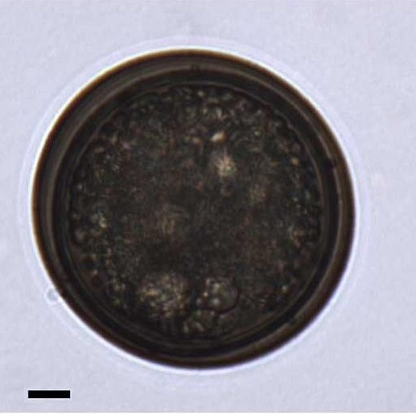

CYSTS LIST
- Alexandrium
- Archaeperidinium/RBSC
- Brigantedinium/Protoperidinium
- Diplopsalopsis/Protoperidinium
- Dubridinium
- Gymnodinium
- Impagidinium
- Lejeunecysta
- Nematosphaeropsis
- Peridinioids
- Polykrikos
- RBSC/Protoperidinium
- Selenopemphix
- Spiniferites
- Stelladinium
- Transparent/Hollow
- Transparent/Solid
- Transparent/Spherical
- Trinovantedinium
- Votadinium
DIPLOPSALOPSIS
The marine heterotrophic dinoflagellate genus Diplopsalis and some genera morphologically similar to Diplopsalis are known as the Diplopsalis group (Abe 1936). The term diplopsalids is used for this group in the present paper. The diplopsalids possess common characteristic features, i.e. the motile cells are simply globular or lenticular with a large sulcal list on the left side (e.g. Abé 1981; Dodge & Toriumi, 1993), and the cysts have a brownish wall with a theropylic archeopyle (Matsuoka 1988; Lewis 1990; Dale et al. 1993). The cysts have a brownish wall with a theropylic archeopyle (Matsuoka 1988; Lewis 1990; Dale et al. 1993). More than 10 genera including Diplopsalis, Diplopsalopsis, Diplopelta have been established within the diplopsalids, because the number of thecal plates is extremely diverse in comparison with the genus Protoperidinium. Among such diplopsalid genera, the genus Oblea was established by Balech (1964) with the plate formula 3', 1a, 6", 3c, 5''', 2'''' and now includes the following three species: Oblea baculifera Balech ex Loeblich Jr. et Loeblich III, Oblea rotunda (Lebour) Balech and Oblea torta (Abé) Balech (Balech 1964). Most diplopsalid cysts have a simple spherical body without ornamentation, and only the cysts of Diplopelta parva (Abé) Matsuoka and Diplopelta symmetrica Pavillard possess spines on the surface. Some species of the marine heterotrophic genus Protoperidinium likewise form round brown spiny cysts with a theropylic archeopyle (e.g. Protoperidinium minutum (Kofoid) Loeblich III and Protoperidinium monospinun (Paulsen) Zonneveld et Dale), although most spiny cysts of Protoperidinium have simple saphopylic archeopyles. The phylogenetic relationship between round brown spiny cysts and theropylic archeopyles is still unclear.
Central body surface |
Processes/Length (um.) |
Remarks |
Species |
Central body (um.) |
Archeopyle |
Image |
Smooth |
Acuminate Hollow1 to 8 |
Central body largeand zigzag archeopyle |
cyst ofObleaacanthocysta | 30 to 53 |
Theropylic Zigzag-like |
|
Smooth |
No processes |
Small size andarcheopyle |
cyst ofOblearotunda | 22 to 31 |
Theropylic split 2/3. |
|
Smooth |
AcuminateSolid1 to 8 |
Spiny surfaceand processes |
cyst ofNieaacanthocysta | 30 to 53 |
Theropylic Zigzag-like |
|
Smooth |
No processes? |
No processes and hexagonal archeopyle |
cyst ofNieachinensis | 25 to 50 |
Intercalary |
|
Finely and faintly ornamented |
No processes |
Bigger size, ornamentation and archeopyle |
cyst ofNieatorta | 60 to 70 |
Theropylic epicystal |
|
BrownSmooth |
Short hairssolid spines3.1 to 10 |
Hairy-processesLarge size |
Qialebouriae | 45 to 60 (D) |
Unknown |
|
Pale brownCoarsely granulate |
No processes |
Coarsely granulate surface wall |
Boreadiniumbreve | 30 to 40 (D) |
Large and theropylic |
|
Pale brownAbundant granules |
No processes |
Archeopyle |
Lebouraiapusilla | 30 to 40 (D) |
Theropylic |
|
BrownSmooth |
No processes |
Archeopyle |
Huiacaspica | 35 to 38 (D) |
Theropylic |
|
Dark brownSmooth |
No processes |
Archeopyle |
Diplopsalislatipeltata | 26 to 46.5 (D) |
Theropylic |
|
Pale brown to graySmmooth |
No processes |
Theropylic and apicalV-shaped |
Diplopsalislenticula | 33 to 50 (D) |
Theropylic |
|
BrownSmooth |
No processes |
Archeopyle |
Diplopsalis ovata | 40 to 50 (D) |
Theropylic and hexagonal |
|
Thick wallDark brown w contentsLight brown w empty |
Hairy-processes |
TheropylicHair like processes(1-4 um. L) |
Diplopeltasymmetrica | 37 to 50 (D) |
Theropylic |
|
Thick wallDark brownSmooth |
No processes |
TheropylicLarge |
Diplopeltaglobula | 60 (D) |
Theropylic |
 |
Dark brownCoarse, covered with granules |
No processes |
A pentagonalantapical plate |
cyst ofProtoperidiniumfuzhouense | 60 (D) |
Theropylic |
|
BrownSmooth |
No processes |
TheropylicLarge and slightzigzag-like |
cyst ofProtoperidiniumthulesense | 33 to 50 (D) |
Theropylic. Smooth toslightly zigzagsuture |


ARCHEOPYLE DIFFERENCES
Schematic drawings of round brown cysts with theropylic archeopyle, all drawn to scale. A. Cyst of Oblea rotunda. B. Lebouraia pusilla. C. Cyst of Huia caspica. D. Cyst of Protoperidinium thulesense. E. Cyst of Boreadinium breve. F. Cyst of Diplopsalopsis lattipeltata. G. Cyst of Diplopsalis lenticula. H. Cyst of Qia lebouriae. I. Cyst of Protoperidinium fuzhouense. J. Cyst of Niea torta. K. Cyst of Niea chinensis. L. Cyst of Diplopelta globula.. Scale bar: 10 um. (Mertens et al., 2019).